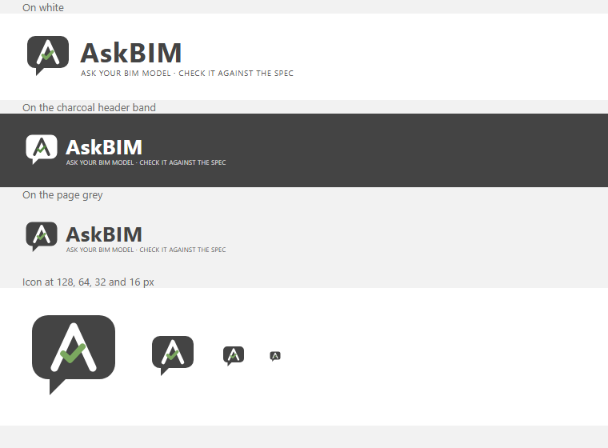
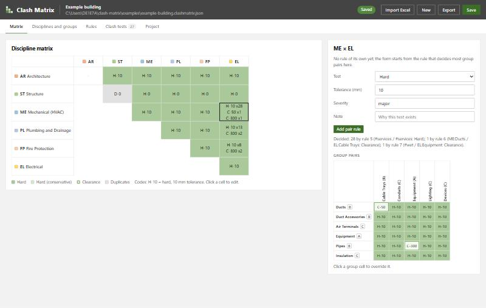
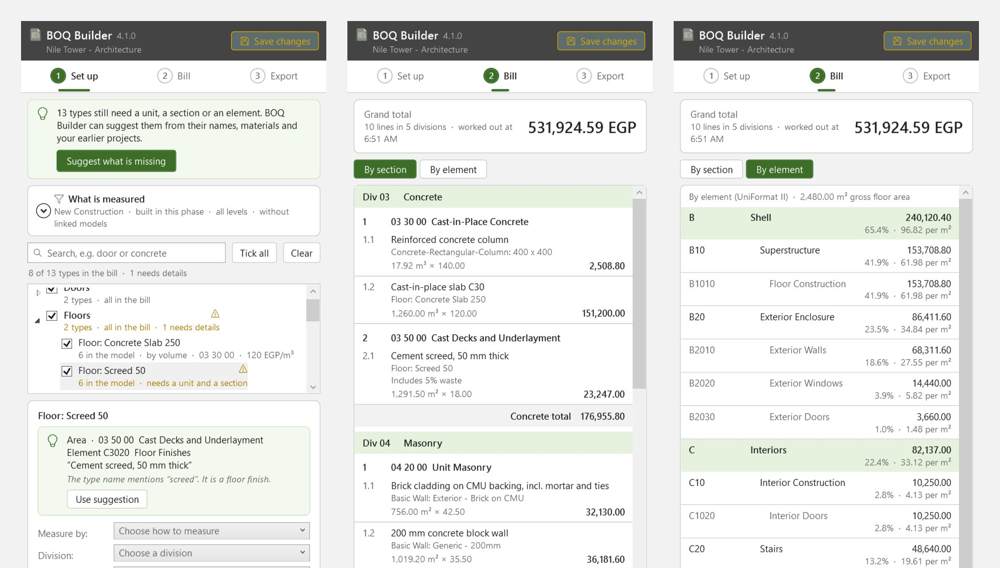
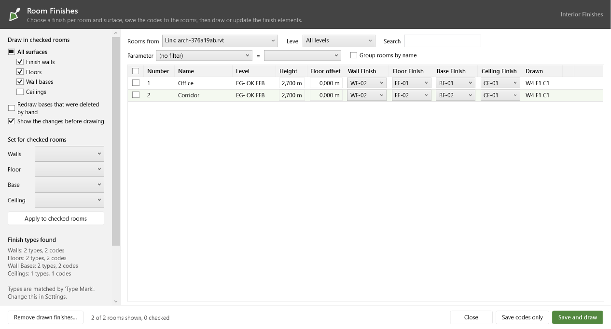
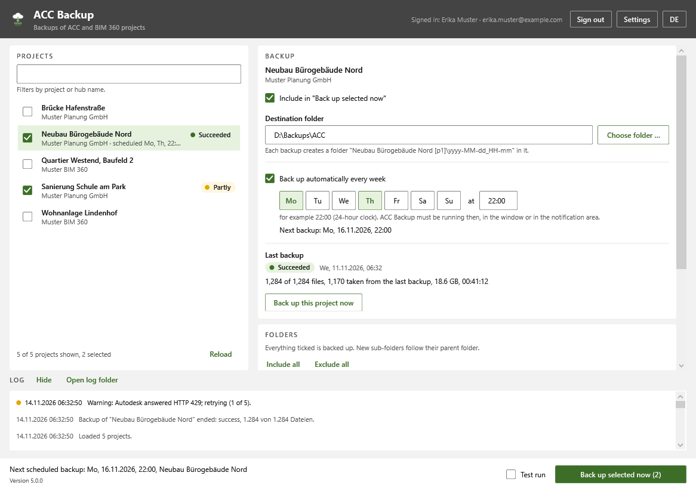

Now: BIM & AI Solutions Architect at Sweco, Munich
Mohamed K. Mahdy
BIM & AI Solutions Architect · Munich
Revit and Navisworks add-ins, batch automation, cloud integrations and AI tools on BIM data.
Five years of software development for architecture and engineering teams in Egypt, the UAE and Germany.

Selected work
Projects
Each project page describes the tool and lists its features, technical stack and screenshots. Technical terms are defined at the end of each page.

BIM Batch
Runs model checks and exports across dozens of Revit models on a schedule, without anyone at the computer.

AskBIM
Answers questions about a 3D building model in plain language, directly in the model's comment threads. It runs on a local AI model, so project data remains on the machine.

Raumbuch
Generates a room book, listing every room and its contents, directly from the building model. Available as a Revit add-in and as a web application that also opens IFC files.
More projects
The source code for most projects is private.
Clash Organizer
Groups thousands of Navisworks clashes by building zone and preserves their status and comments when a clash test is run again.
View project →
Clash Matrix
Replaces a large, manually completed clash matrix with a small set of rules, then generates the clash tests for Navisworks and for open-source tools.
View project →
BOQ Builder
Turns the quantities in a Revit model into a priced bill of quantities and a cost plan, exported to Excel, PDF or the German GAEB tender format.
View project →
Interior Finishes
Models the wall, floor, skirting and ceiling finishes of every room in Revit and keeps them correct when the design changes.
View project →
ACC Backup
Copies Autodesk Construction Cloud projects to a local drive every week, downloading only what has changed.
View project →Family Validation
Checks and cleans entire folders of Revit families against a company standard, without anyone opening Revit.
View project →
Cloud Revisions
Lists every revision cloud in a Revit model with its sheet and revision details, and exports the list to Excel or an offline dashboard.
View project →
Revit Automation Suite
Four Revit tools that automate repetitive model tasks: preparing files for issue, organising worksets, joining elements and copying types between projects.
View project →
BIM Analytics
Power BI dashboards on model health, open clashes, issues and team workload, refreshed on a schedule.
View project →
Curtain Panel Suite
Four Revit tools that take a glass facade from design to finished drawings: creating the panels, scheduling them, producing a drawing of each type and annotating the set.
View project →Experience
Professional experience
Six organisations and a freelance practice, in Cairo, Dubai and Munich.
- 2026 to now
Sweco · Munich
BIM & AI Solutions Architect
Work on the department's AI roadmap: scoping the automation portfolio, planning the Microsoft Copilot Studio rollout and setting delivery milestones with leadership. Development of Revit tools and LLM agents through to internal release.
- 2025 to 2026
Sweco · Munich
BIM & AI Specialist (working student)
Revit add-ins, LLM agents that search technical documentation, Power Automate and Power Apps for project workflows, and Power BI dashboards that show coordination status.
- 2024 to 2025
Obermeyer · Munich
BIM Software Developer (working student)
Scripts that automate model-checking rules in Desite MD, Power Automate flows that sort and name SharePoint files, and Power BI dashboards on model quality.
- 2023 to 2024
Dewan Architects + Engineers · Dubai, remote
BIM Software Developer & Data Analyst
BIM software and data analysis for coordination, model quality and project reporting.
Earlier roles, 2020 to 2024
- 2022 to 2024
Freelance · Remote
BIM Software Developer & Data Analyst
18 client projects: Revit automation, Dynamo scripts and Python data pipelines.
- 2023
Solid Construction · Cairo
BIM Software Developer
Revit add-ins and Dynamo scripts for structural modelling, quantities and finishes.
- 2021 to 2023
Pinnacle Misr · Cairo
BIM Software Developer / Coordinator
Revit plugins and Dynamo workflows on large projects, including the El Alamein Iconic Tower and Kitoko Ministerial City.
- 2020 to 2021
X-Dimension · Cairo
BIM Architect
BIM standards and templates, Dynamo scripts, and Scan-to-BIM (producing models of existing buildings from laser scans).
About
Background
Architectural engineer by training (B.Sc., Alexandria University). Since 2020 I have developed software for architecture and engineering teams in Cairo, Dubai and Munich: Revit and Navisworks add-ins, automated model-checking and export pipelines, cloud integrations, Power BI reporting and AI tools on BIM data, alongside 18 freelance client projects.
M.Sc. in Information Technologies for the Built Environment from the Technical University of Munich, completed in 2026. The programme covers semantic modelling and software engineering together with GIS, spatial data mining, photogrammetry and remote sensing.